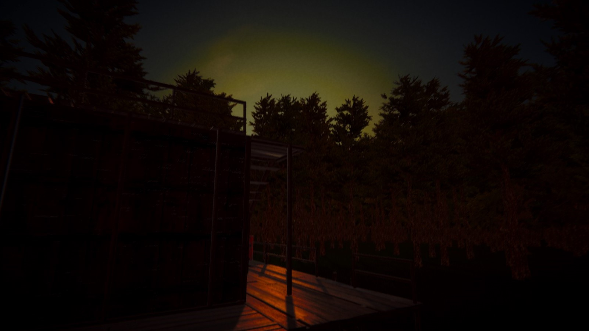

Witaj na stronie głównej projektu!

Gdy zajdzie słońce, rozpoczynasz walkę o przetrwanie.
Dlaczego akurat to?
Wiele osób zadało mi pytanie, dlaczego akurat tworzenie gier? Czy nie ma łatwiejszych sposobów na czerpanie przyjemności i satysfakcji z programowania? Owszem, są przyjemniejsze sposoby, jednak moim zdaniem żaden z tych sposobów nie jest tak kreatywny i uwalniający wolę wyobraźni jak tworzenie gier
Dlaczego akurat Forest Nightmare
?
Zacznijmy od tego, że pewnego grudniowego wieczoru siedziałem jak zwykle przed komputerem, i przeglądałem internet, gdy moim oczom ukazał się artykuł ukazujący grę, która miała niedługo wyjść. Gra była z gatunku horror, i przyciągnęła dużo osób. Stwierdziłem że w sumie to trochę czasu minęło od stworzenia mojej ostatniej gry, i nie skończyła się ona suksesem. Poddałem się po dwóch miesiącach z powodu tego, że całą pracę wykonuję samemu. Ale tym razem uznałem że tak łatwo się nie poddam, a z racji że mam bujną wyobraźnię to stworzenie w głowie pomysłu, postaci, miejsc i fabuły nie zajęło mi dużo czasu. Tak więc odpaliłem notatnik i zacząłem pisać wszystko to, co pojawiało mi się w głowie. Stąd wzięły się postacie wokół których kręci się cała fabuła
Marcusoraz
Max. Siedziałem tak kilka godzin i układałem cały plan wydarzeń. Powstała wymyślona wioska
Mischgern, a fabuła w większości toczy się w lesie obok wioski. Po tym jak napisałem całą historię, zabrałem się za realizację tego wszystkiego. Stworzyłem pierwsze pliki projektu, zaimportowałem pierwsze assety, i zacząłem tworzyć, niestety praca nad tak sporym projektem w pojedynkę jest czasochłonna, jednakże myślę że na dzień dzisiejszy jest bliżej do końca, niż do początku. Jeśli ktokolwiek czytający to ma jakiekolwiek pytania, niech skontaktuje sie ze mną poprzez Discord'a, który dostępny jest w zakładce
Kontakta postaram się jak najszybciej odpowiedzieć.